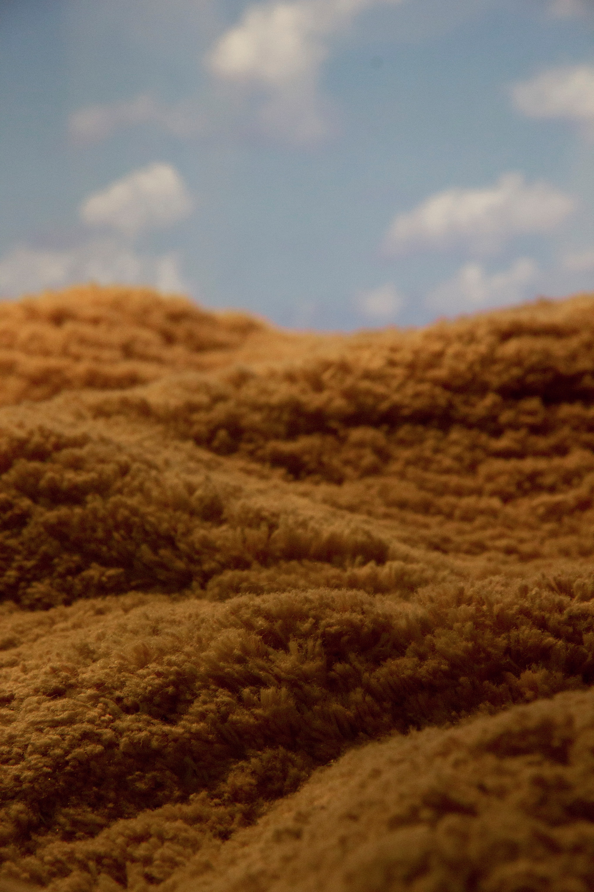

Born in Oklahoma and raised in rural New Jersey, Deering received a BFA degree in lens-based visual arts from The College of New Jersey in 2018. Raised in a family of artists and nature-enthusiasts alike, Deering grew up creating detail oriented drawings of the animals and landscapes that surrounded her. Since then, she has moved toward photography, still continuing to draw from her familial ties to the natural world and the beauty it encompasses. Whether it be through abstraction, recreation, or documentary; her work captures the mystery and oddity of the world outside man's creation.